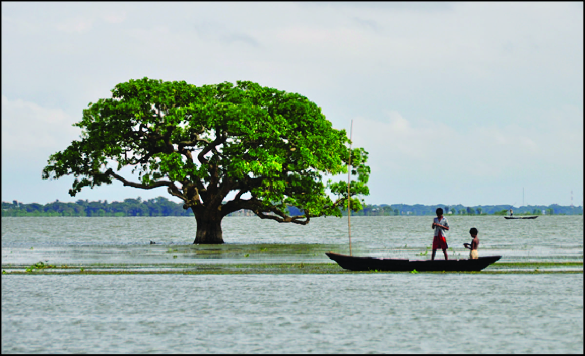

The student members of the Rho chapter of Sigma Gamma Epsilon at Indiana University invite you to participate in the annual Crossroads Geology Conference at Indiana University. This conference is a student-organized event featuring research presentations by graduate and undergraduate students in the geological and environmental sciences from a number of regional colleges and universities, at Indiana University in Bloomington.
To submit your abstract please download the abstract template, fill it out accordingly and email it to crossroadsgeologyconference@gmail.com.
Abstract guildlines are on the first page of the abstract template. An example of a completed abstract form can be downloaded here.
If you would like us try to place you with a student host, please indicate so on your abstract submission.
| Poster | Oral | |
|---|---|---|
| Undergraduate | Poster Name 1 | Oral Name 1 |
| Masters | Poster Name 2 | Oral Name 2 |
| PhD | Poster Name 2 | Oral Name 2 |
This page will be updated as more information becomes available (e.g. tentative schedule, keynote speakers...). If you can't find what you're looking for, contact us at davids@indiana.edu.
| Judge | Affiliation |
|---|---|
| Lisa Ryan | Exxon |
| Larry Whitmer | Wabash Energy |
| Henry Loope | IGS |
| Tom Skirvin | Rincon Energy, LLC |
The Bengal basin of South Asia lies at the convergence of three tectonic plates, a position that has made it one of the principal repositories for Himalayan sediment over the past 40 million years. Today, the nearly 20-km thick pile of sediment remains the site of confluence for two great rivers of the world, the Ganges and Brahmaputra, which together drain 75% of the monsoon-drenched Himalayan orogen. Delivering a billion tons of sediment per year, these laterally-mobile braided streams have fueled construction of ~150,000 km2 delta system over the Holocene. At the coast, the delta system interfaces with a dynamic marine environment at the head of the Bay of Bengal, where 3-m tides extend 100 km inland of the shoreline, along with storm surges from the nearly annual tropical cyclones. Sediment transported by these tides and marine incursions are essential to maintaining vast areas of the delta that receive little direct fluvial input. In addition to being geologically superlative, this massive river delta is also home 150 million people living in Bangladesh and West Bengal, India, giving the system great societal relevance – and environmental strain. In this talk we will set the regional background of South Asia, and then connect modern processes to the current deltaic landform that has been built over recent millennia. From these surficial perspectives, we will then move below ground to investigate stratigraphic architecture of the >90-m thick Holocene delta, the development of which ensued promptly after termination of the Younger Dryas cold period ~11,500 years ago.